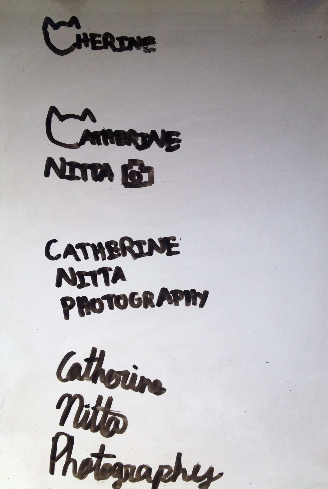
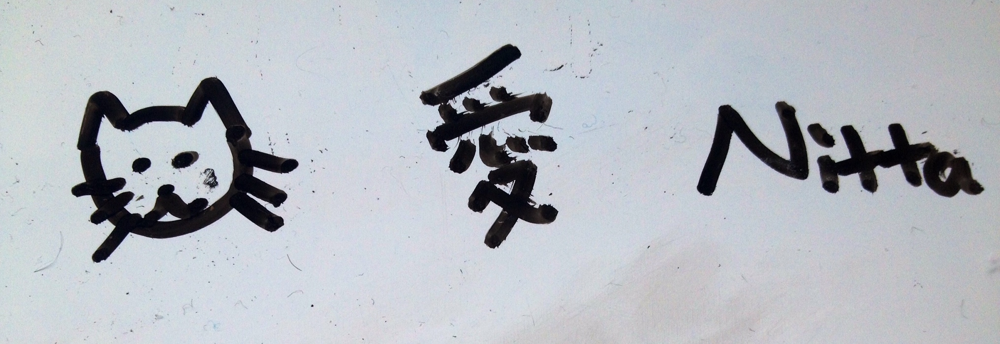
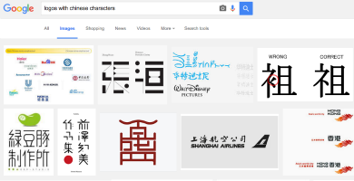
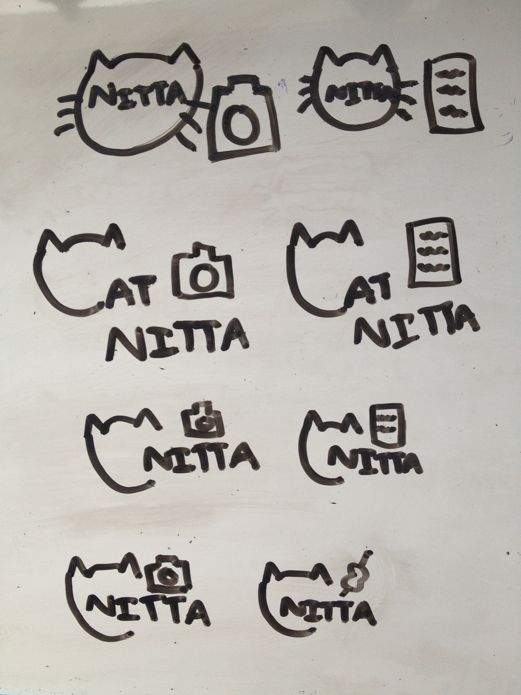
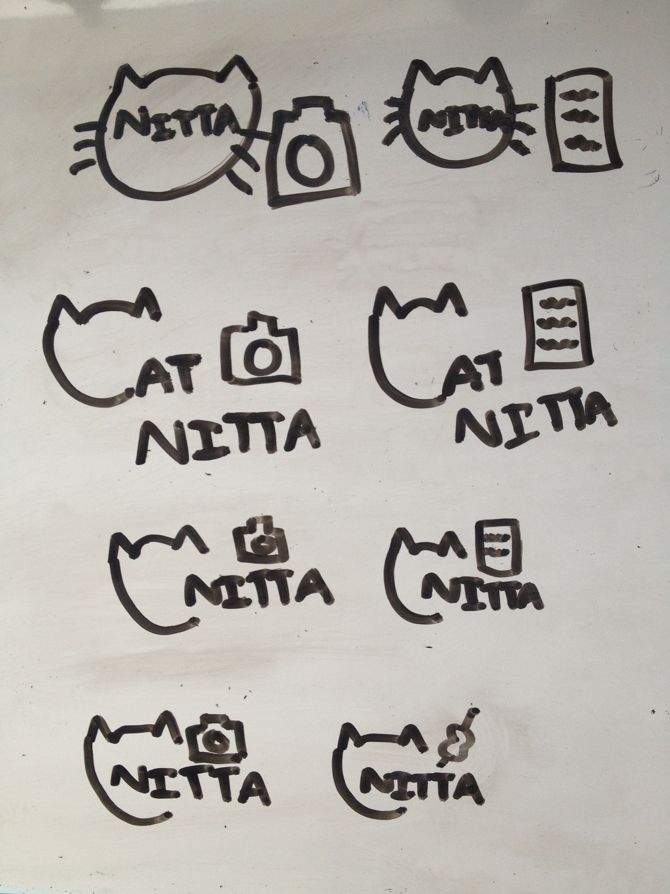
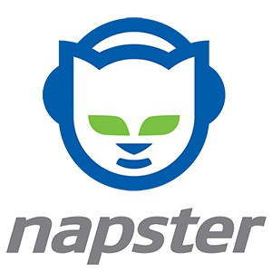
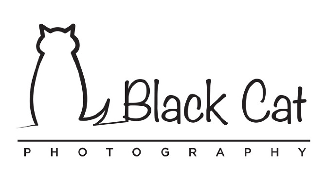
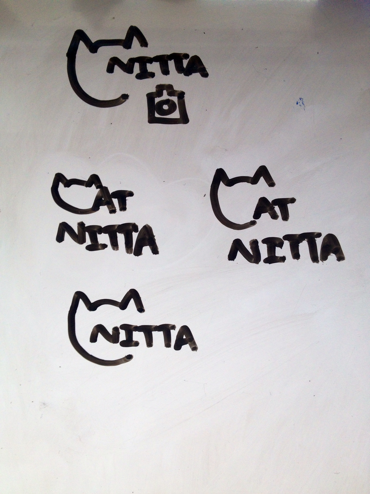

I have recently been taking pictures quite a lot. Even though I'm not taking pictures for professional purposes, I thought it'd be cool to have my own logo. People probably usually start personal branding when they do lots of gigs, but personally, I just thought that it would be a worthwhile project to do.
I started off by writing my name a lot of different ways. This is what I came up with:
My name is kind of long in its entirety. For photography, I would want to put it on a picture I take to mark it as my own. Some photographers put their name in a small font, while others have a small logo, that takes up maybe 70x70 pixels at most. Therefore, there should be a pretty low form factor. None of these would do. My attempt to shorten my name was to draw a cat head in place of the "Cat" part of Catherine("Cat" is what my close friends call me), but that looks like "Cherine". Unless I actually go by "Cat", putting a cat head with "Catherine" lacks context. So then I thought about what my name could be distilled down into:
For my first name, I could use a cat in place of "Cat". My last name is not all that common, so if anything, perhaps that's the thing to emphasize. If I wanted to include my middle/Japanese name, that's it in the middle. It's the Chinese character for love. My Japanese heritage is important to me, and love could refer to that part of my identity, or love of the craft. However, do people in industry use Chinese characters as part of branding? I tried Googling this:
I found that all the logos were for Chinese branches of companies with English names, or Chinese companies. I also found a logo for a "Fox Intercultural Consulting Services", which didn't directly use Chinese characters, but was inspired by one. The Chinese character used is one that means "all" or "same", which I guess makes sense for an intercultural consulting company. Anyhow, the derivation of that logo might not make a lot of sense to people with no Chinese experience. So I scrapped the idea of including my Japanese name. Love is sometimes represented with hearts, but if I wanted to include "Cat" without words, I felt that it would be too image-heavy. I then drew logos using the "Cat" part of my name with my last name.
 

But then I wondered if animals are used in logos. In photography especially, the logo shouldn't distract from the work. If I used a image as part of my logo, would it really be okay? So I Googled animals in logos.
 I didn't find any examples of using animals as part of text logo. Animals are more used as a mascot, as in the example of Napster and Black Cat Photography. And people who are named "Cat" don't use cats. In terms of memorability, then, using a cat head might be a good idea. However, it shouldn't be distracting. With all this in mind, I narrowed down my choices.

Out of these, I picked the logo on the very bottom. I also faced some challenges when I actually digitally produced my logo. For example, I don't have very many pictures that are white, or at least a color where black would stand out. I ended up using the black version of the logo, but placing it in a lighter part of the picture. This way, the logo didn't distract. And that is how I came up with my logo, which is white on my personal website and black on my photography website.